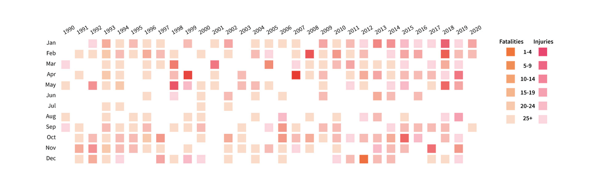

A BRIEF LOOK INTO THE IMPACT OF U.S. SCHOOL SHOOTINGS FROM 1990-2020
By Tatiana Kalainoff
In early 2021, Representative Marjorie Taylor Greene, member of the House of Education Committee, agreed with claims on social media that the Parkland High School mass shooting was a "false flag" planned event.
The United States has a deep and heart-breaking history of gun violence as a country and in the more recent years the news has covered several significant shootings that have all taken place on school grounds.
Now amidst a global pandemic school shootings are down, but gun violence is at the forefront of the news cycle, with the Atlanta hate crime shooting and the Boulder grocery store shooting.
This is a data exploration of school shootings from 1990-2020 to uncover trends of the past 3 decades and to note where we currently are given that most children haven't been to school in over a year.
Before we get into the numbers, let's take a look at geography...
School shootings touch nearly every state and every corner of our country. In the data set used for this analysis the only state that did not have any school shootings recorded is North Dakota.
There was not enough data to ethicallly investigate and compare different locales like urban, suburban or rural, but it is safe to say that no matter who we are or where we live we want our schools to be places of safety.
Throughout this essay we will be often be comparing and contrasting number of shootings, number of fatalities and number of injuries. These maps give us a better sense of how these numbers spread out across the states and regions.
Measuring the impact of school shootings over the last 30 years
When we talk about total impact, we are specifically looking at the sum of both fatalies and injuries. At times, we will look at one or the other, but to really get a full understanding we will need to look at fatalities and injuries together.
Below are graphs that explores the factors by year over the last 3 decades. The most apparent trend we can gleam from this is that 2020 had some of the lowest impact we have seen in a long time, clearly from the pandemic forcing schools nationwide to switch to completely remote learning.
We can also see that for the most part the trends for number of shootings and number of fatalities are very similar and that the number of injuries followed those trends but remained lower from 1990-2010 and then jumps in the last decade to meet the other two.
Understanding fatalities and injuries in realtion to number of shootings
Taking a deeper look into impact by month ...

Heatmap overlaying fatalities and injuries by month - explore more in depth below!
... and state
Radial bar charts comparing number of shootings to total impact, fatalities and injuries
Top 5 Deadliest Shootings
Viriginia Tech (Blacksburg, VA)
Sandyhook Elementary (Newtown, CT)
Marjory Stoneman Douglas High School (Parkland, FL)
Columbine High School (Littleton, CO)
Red Lake Senior High School (Red Lake, MN)
Top 5 Deadliest States
California, Texas, Florida, Virginia and Pennsylvania
Deadliest Year
Highest number of fatalities in a given year since 1990
Takeaways
School shootings have a devastating impact on our society and country. Rather than try and create solutions for the problem like bullet-proof backpacks, active-shooter lockdown drills etc. we should advocate for more effective gun control policy to get at the root of the issue.
I will be continuing to research this topic and expand this exploration to include data on impact of specific school type, greater state breakdown, inclusion of gun policy data and shooter demographic data.